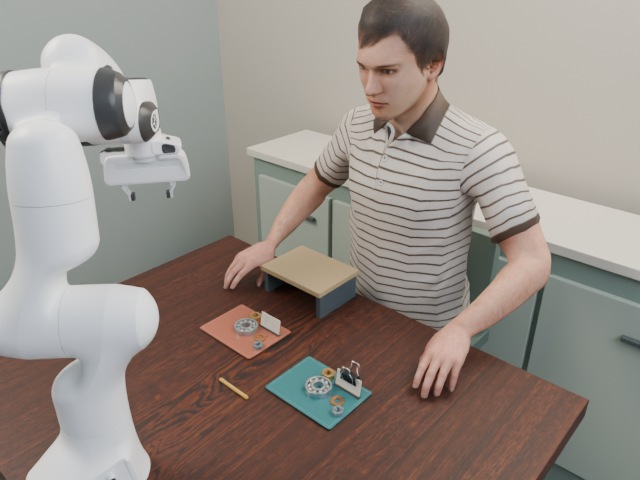
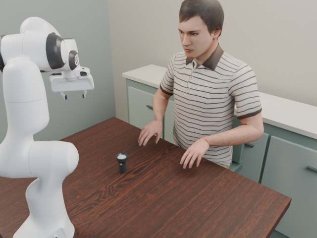
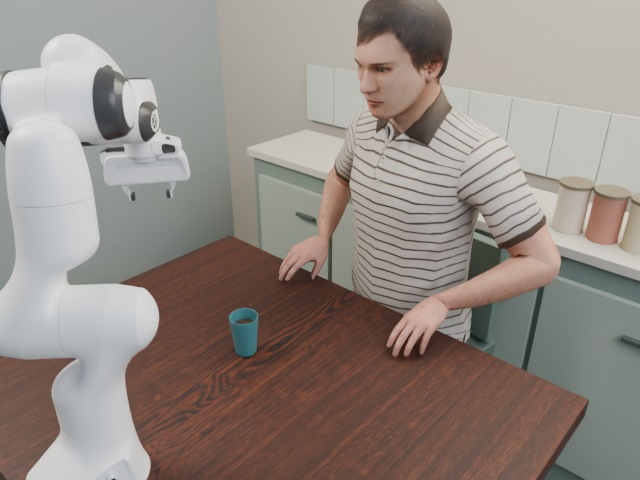

Paused work
“Clear a spot on my workbench.”
Ten experiments with a simulated Franka arm. Choose a trial to see its robot action, the person’s response, the memory it produced, and what happened on transfer.

“Clear a spot on my workbench.”

“Help prepare the handmade card.”

“Hand me the flashlight.”

“Set out the red base and yellow cap for assembly.”

“Bring me my drink.”

“The bin is full. Give the person a low-priority completion update.”

“Serve cooked broccoli alongside the warm dinner.”

“Put the house keys and flashlight away after use in the entryway.”

“Turn on a light for the person working on a puzzle.”

“Set out a cleaner so I can wipe my kitchen counter. I am home alone.”